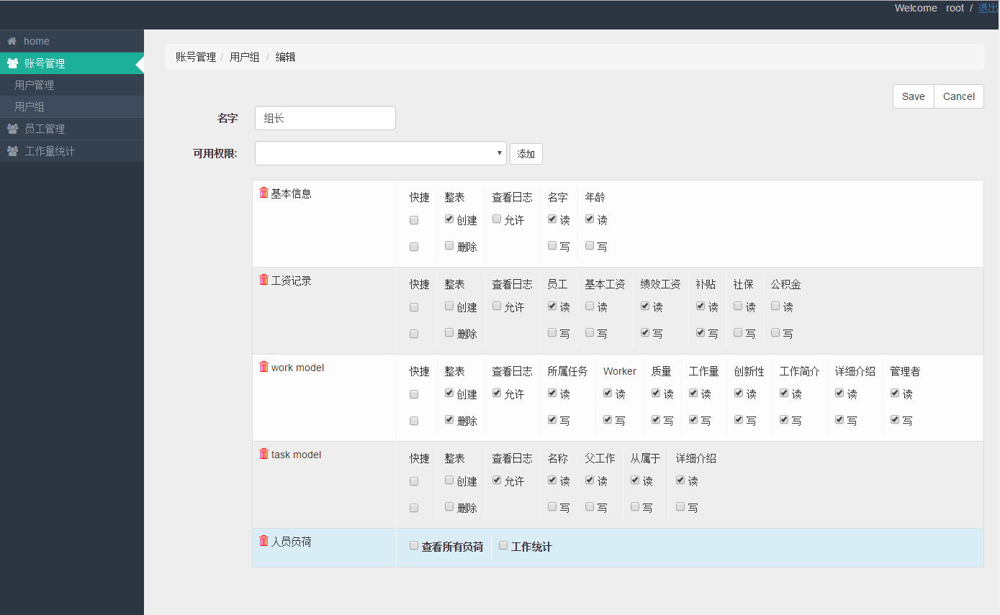

insight¶
本项目是我自己做的项目，还在不断的完善当中。可以说这个项目是我这一年多以来的经验总和，看起来简单，但是凝聚了大量的考量。我的目标是模拟Django Admin框架，构造一个管理系统框架。到目前，类Django_Admin功能基本完成。期盼能够在未来的工作中得到大量应用。
测试地址：http://insight.enjoyst.com/
我做到了以下几点：
前后端分离
Django Admin框架包办了前后端功能。通过在后端设置代码，达到控制前端显示的目的。在普通情况下，开发效率极高，维护性极佳。但是，一旦遇到比较特殊的要求，后端代码量爆炸式增长，开发效率和维护性急剧下降。甚至，大量效果Admin无法实现。
鉴于此，我将前后端分离，后端代码只涉及到数据，而前端借助于AngularJs或者Vuejs框架，以数据驱动生成页面。这样，后端代码做到了极简，而前端利用到了最新的前端技术开发，大大优于Django单打独斗的方式。
改进权限控制
Django Admin的权限管理，只能控制整张表的创建，更新和删除。django-guardian 达到了行(object)级别的控制。但是对于产品级别的管理系统，这是远远不够的。我的目标是做到字段级别控制。这样不仅可以达到权限控制的目的，而且还能尽量暴露较少的内容给用户，达到简化系统的目的。
